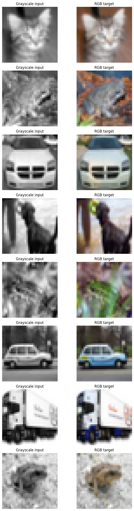
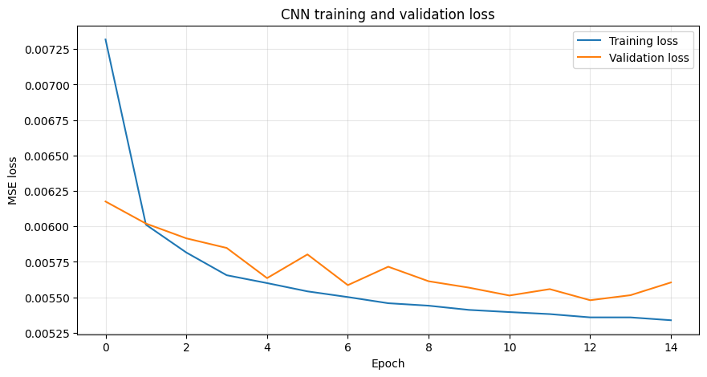
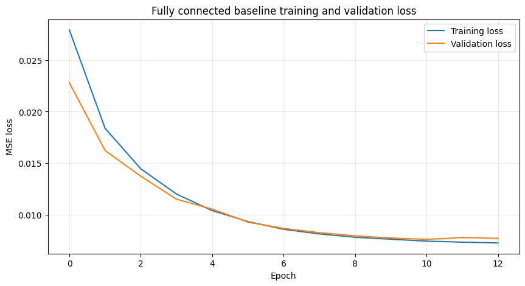
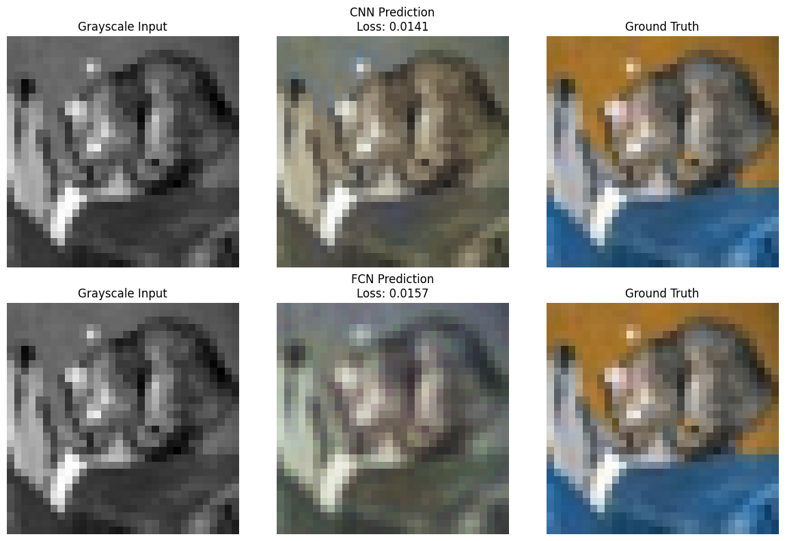
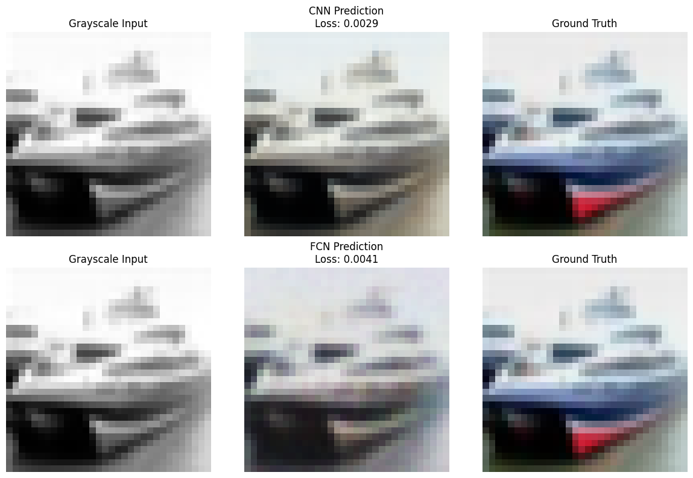
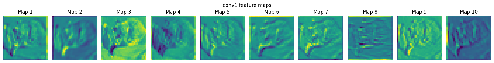
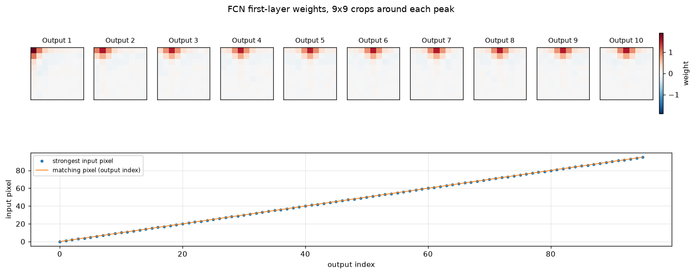

Both models stopped early, so both had converged rather than run out of budget: the CNN after 15 epochs, the baseline after 13.
CIFAR-10 Image Colorization
A PyTorch comparison of convolutional and fully connected grayscale-to-RGB colorizers
Predicting the colours of a grayscale image on CIFAR-10. A convolutional colorizer reaches 0.0053 held-out test MSE against 0.0074 for a fully connected baseline carrying 21x more parameters.
Overview
Colorization is a supervised image-to-image problem: the model receives a grayscale image and predicts the three colour channels that were removed.
Two PyTorch models are trained on the same task, the same loss and the same data. One is convolutional; the other flattens the image and maps pixels directly. The comparison is the point, because the second model has roughly 21 times more parameters and still loses.
The notebook is the runnable artifact: it trains on a Colab GPU and writes the figures and metrics this page reads. That split keeps the page renderable on any machine, with no GPU, no dataset download and no checkpoints. All the code on this page comes from it, and every figure was produced by running it.
Why the Targets Are Not Normalized
This decision determines whether any of the numbers below mean anything.
Both models end in a sigmoid, which can only emit values in \([0, 1]\). The RGB targets are therefore produced with ToTensor() alone, which already maps pixels into that range, and no Normalize() is applied.
The coursework version this project grew out of normalized targets to \([-1, 1]\). A sigmoid cannot reach the negative half of that range, so those targets were unreachable by construction. The error contributed by the negative half alone is
\[ \mathbb{E}\left[(0 - y)^2 \;\middle|\; y < 0\right] \cdot P(y < 0) \approx 0.16, \]
which is almost exactly where the original run plateaued: 0.1476 and 0.1529. The models were not underfitting. They were being asked to predict values they could not represent. After the fix, the same architectures reach around 0.005.
The Data
CIFAR-10 provides 60,000 32x32 colour images. The labels are unused: each image is its own supervision signal, with a grayscale copy as input and the original as target.
class GrayscaleToColorDataset(Dataset):
"""Return (grayscale input, RGB target) pairs from an image dataset."""
def __getitem__(self, idx):
image, _ = self.dataset[idx]
return self.gray_transform(image), self.color_transform(image)Both transforms are applied to the same PIL image, which is what keeps each input aligned with its target.
The 50,000 training images are split 45,000 / 5,000. Early stopping and checkpoint selection read only the validation split; the 10,000 test images are touched once, at the end.

The Two Models
The convolutional colorizer holds full resolution throughout. There is no pooling: a colour decision is needed at every pixel, so there is nothing to gain from compressing to a global summary and back.
class ColorizationCNN(nn.Module):
def __init__(self):
super().__init__()
self.conv1 = nn.Conv2d(1, 64, kernel_size=3, padding=1)
self.conv2 = nn.Conv2d(64, 128, kernel_size=3, padding=1)
self.conv3 = nn.Conv2d(128, 64, kernel_size=3, padding=1)
self.conv4 = nn.Conv2d(64, 3, kernel_size=3, padding=1)
self.sigmoid = nn.Sigmoid()The baseline flattens the image and applies a single linear map. It has no notion of which pixels are neighbours, so it must learn every input-pixel to output-pixel relationship separately.
class ColorizationLinear(nn.Module):
def __init__(self, image_side=32):
super().__init__()
self.fc1 = nn.Linear(image_side * image_side, 3 * image_side * image_side)That difference is the whole experiment: 150,019 parameters against 3,148,800.
Choosing a Loss
Predicting continuous channel values is regression, which rules out cross-entropy. Mean squared error is used throughout:
\[ \mathcal{L}_{\text{MSE}} = \frac{1}{N} \sum_{i=1}^{N} (y_i - \hat{y}_i)^2 \]
It is cheap, differentiable everywhere, and penalises large errors disproportionately, which pushes the model off wildly wrong colours early.
Its weakness shows up in the predictions below. Because the penalty is quadratic, the safest guess under uncertainty is the average of the plausible colours, so a model unsure whether a car is red or blue minimizes expected error by predicting grey-brown. Mean absolute error grows linearly and desaturates less; perceptual losses compare features from a pretrained network and match human judgement far better, at the cost of a second network.
The deeper limit is that no per-pixel loss can be fully right here. Colorization is ill-posed: a grey car could be red or blue, and both are correct. A per-pixel loss scores against the one colour the original photograph happened to have, penalising a plausible alternative as hard as a wrong one. Every number below sits under that ceiling.
Training
Adam at 1e-3, batch size 64, up to 20 epochs, early stopping after two epochs without a validation improvement.
Every epoch writes two checkpoints: the best weights so far, and a resume file carrying optimizer state and history. Training runs on a Colab runtime that can disconnect, and the resume file is what makes an interruption cost one epoch instead of the whole run.
The same run is available as a terminal script, scripts/train_colorization.py, for training without a notebook.


The shapes differ in a way worth noting. The CNN drops almost to its final loss within one epoch and then flattens. The baseline descends gradually across all of its epochs, ending higher than where the CNN started flat.
Results
| CNN colorizer | Fully connected baseline | |
|---|---|---|
| Trainable parameters | 150,019 | 3,148,800 |
| Epochs trained | 15 | 13 |
| Best validation MSE | 0.0055 | 0.0076 |
| Held-out test MSE | 0.0053 | 0.0074 |
The CNN reached the lower test MSE, by 29% relative, with 4.8% as many parameters as the baseline.
Predictions


The CNN keeps object boundaries intact and applies colour in coherent regions. The baseline produces blotchier output with colour that drifts across edges, which follows from having no representation of adjacency.
Both are muted against the ground truth. That is the MSE hedging described above, not undertraining, and it will not improve with more epochs.
What the CNN Learned

Early layers respond to edges and local contrast. Later ones combine those into the regional decisions the final layer turns into colour.
What the Baseline Learned
A full weight row is not worth plotting: 1,023 of its 1,024 values sit near zero, so the image is a flat field under any colormap and the single cell that matters is a speck. Cropping around each output’s strongest weight, and tracking where that peak falls, shows the structure instead.

The peak lands on the matching pixel for 96 of 96 outputs checked, which is the diagonal in the lower panel. Output \(i\) reads input pixel \(i\).
The crops add one detail the diagonal alone does not. Around each peak sits a weaker band of positive weight over the immediate neighbours, so the baseline is not quite a pure per-pixel lookup: it leans slightly on the surrounding brightness, averaging over a small neighbourhood before choosing a colour.
That is the interesting part. Given no architectural notion of adjacency, and 3.1M free parameters with which to learn anything at all, the model spent them rediscovering that neighbouring pixels are related — approximating, badly and expensively, what a convolution is handed for free. It also shows nothing resembling the edge or texture detectors a hidden layer in a deeper network would develop, because there is no hidden layer in which they could form.
Takeaways
The parameter counts carry the result. A \(3 \times 3\) filter is applied at all 1,024 positions, so the CNN learns one set of weights and reuses it everywhere. The baseline spends 3.1M parameters learning each input-pixel to output-pixel relationship separately, and arrives at a worse answer. The same effect appears three times on this page: in the parameter counts, in the test losses, and in the single-pixel weight maps.
Colour is where both fall short, and a different objective is what would fix it, not a different architecture.
Next steps:
- an encoder-decoder with skip connections, so detail survives downsampling
- prediction in Lab space, colorizing only the
abchannels and keeping the givenL, which removes the brightness half of the problem - a perceptual or adversarial term to counteract the desaturation
- SSIM or LPIPS alongside MSE, since neither model should be judged only on the metric it was trained to minimize